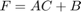
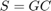
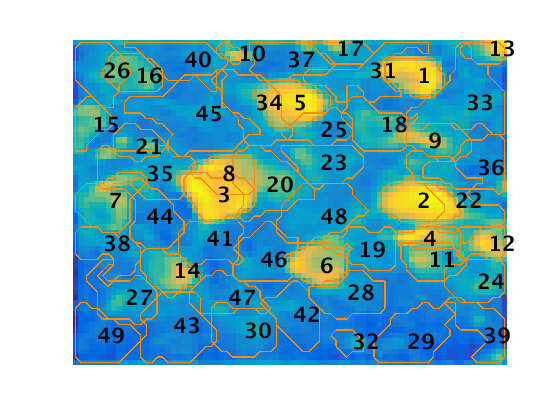
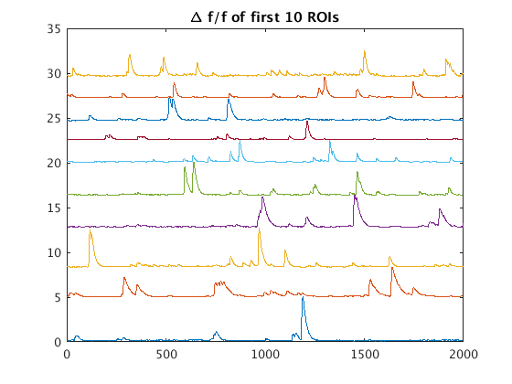

Simultaneous Denoising, Deconvolution and Demixing of Calcium Imaging Data
This tutorial is adapted from the demo script provided along with the Calcium Source Extraction software package developed by Pnevmatikakis et al. (available here). It is meant to be a high level overview of the functions employed with explanations of what they do. More elaborate details and an analysis of algorithmic performance can be found in [1].
Contents
Calcium Imaging
In analyzing calcium imaging data, there exist three main challenges: (1) segmentation of the spatial footprint of the region of interest (ROI); (2) demixing of spatially overlapping cells; (3) recovery of neural (spiking) activity from noisy measurements of calcium indicators. This software addresses all three problems simultaneously while minimizing the need to tune parameters. In general, it is anticipated that only the number of cells and approximate size need be tuned between analyses. One key advantage of this algorithm for ROI selection compared with manual selection is the ability to identify and disentangle signals from spatially overlapping cells. Moreover, the software features an option to manually initialize regions where cells are presumed to exist. Below, we walk through the different components of the analysis so that it will be easy to test on your own data and adopt into your processing pipeline.
A video of the image file being analyzed throughout this tutorial can be found here:
filename = 'demoMovie.tif'; Y = double(readTifStack(filename)); % Note that Y must be a double Y = Y - min(Y(:)); Cn = correlation_image(Y);
Try replacing filename with a path to a file of your own data.
Parameters
One of the highlights of this software is that it requires minimal tuning of parameters. Generally, only an estimate of the number of cells and the approximate size of the cells needs to be provided. However, for the sake of exploring a little deeper, a few additional parameters are discussed below. Most of these will probably not change from one analysis to another, but you may want to compare different settings before assigning standard run parameters and analysis of different types of data may require different options. The full list of tunable options for each function can be found in the software documentation.
The following parameters are particularly sensitive, relevant or interesting:
- d1 and d2: these are inherent in the data set; they represent the spatial dimensions of the images.
- p: the order of the autoregressive model; a value of 1 here calculates coefficients for only the rate of decay of the calcium signal - a value of 2 also calculates the coefficients for the rate of growth. This parameter is used in the preprocessing step (preprocess_data) and in updating the temporal components (update_temporal_components).
- deconv_method: indicates how to process raw fluorescence data from a given region into its calcium signal. There are five options provided with the code ('project', 'constrained_foopsi', 'MCEM_foopsi', 'MCMC', and 'noise_constrained'). Any other method that takes as input the averaged raw traces from each spatial component and returns the deconvolved calcium activity can be easily added in to the the update_temporal_components function by adding another case to the switch case portion of the function. In general, 'constrained_foopsi' is recommended. The algorithm from this method is described in Vogelstein, 2010 [2].
- merge_thr: this parameter is used by the merge_components function. Components with overlapping spatial footprints whose temporal components have a correlation component greater than this value are merged into a single component.
- tau: this parameter is used throughout the analysis and represents the approximate size of the
Inherent
[d1,d2,T] = size(Y);
d = d1*d2; % total number of pixels
User defined
max_cells = 50; tau = 4; p = 2; options = CNMFSetParms(... 'd1',d1,'d2',d2,... 'deconv_method','constrained_foopsi',... 'merge_thr',.8,... 'gSig',tau... );
Preprocessing
Preprocessing includes fixing missing pixels and estimating the noise for each pixel (at this point, p is passed only for later use unless global AR coefficients are to be assigned).
The noise is estimated using the power spectral density of the fluorescence measurements at each pixel under the assumption high frequency components are noise. Therefore, an average of the amplitude of high frequency components should be a reasonable approximation of the noise variance.
The outputs here are , a structure variable which stores, among other things, the noise variance for each pixel, and , an updated version of the raw image with missing pixels fixed.
Methods Reference:
- Estimation of Model Parameters
[P, Y] = preprocess_data(Y,p);
Estimating the noise power for each pixel from a simple PSD estimate... done
Initialize spatial components
The default way of initializing the spatial components is with a greedy algorithm which assigns cell centers based on the locations of the brightest pixels (those that explain the greatest variance in the filtered image) after application of a Gaussian filter. The spatial and temporal components of the region surrounding the center are calculated and subtracted from the image data and the process is repeated until the number of neurons specified by max_cells is found.
An alternative way of initializing spatial components is to solve a sparse nonnegative matrix factorization problem (group lasso initialization). The details of this method are not given here, but it is important to note that this method of initialization is recommended for densely packed cells or somatic data. To use this initialization method, when setting the options, add the line
'init_method','sparse_NMF',...
to the list of inputs given to CNMFSetParms.
The outputs of this function are the spatial footprints (Ain), the calcium concentration signals (Cin), the spatial and temporal backgrounds (bin and fin, respectively) and the locations of the centers.
Methods Reference:
- Greedy Initialization for Somatic Imaging Data
- Group Lasso Initialization for Somatic Imaging Data
[Ain,Cin,bin,fin,center] = ...
initialize_components(Y,max_cells,tau,options,P);
No spatial downsampling is performed. Consider spatial downsampling if the field of view is very large. No temporal downsampling is performed. Consider temporal downsampling if the recording is very long. starting resampling Initializing components with greedy method found 10 out of 50 neurons.. found 20 out of 50 neurons.. found 30 out of 50 neurons.. found 40 out of 50 neurons.. found 50 out of 50 neurons.. Refining initial estimates with HALS... done
Let's take a look at what we have so far.
figure; plot_contours(Ain, Cn, options, 1); axis equal; axis tight; hold all; scatter(center(:,2),center(:,1),'mo'); title('Center of ROIs found from initialization algorithm');
Manually refine spatial components
You may want to add or subtract pixels to the list of cell centers. The following function provides a nice GUI to do just this. By changing the refine_components flag, you can decide whether or not run this portion of the code.
refine_components = false; % set this to true to change the cell centers if refine_components [Ain,Cin,center] = manually_refine_components(... Y,Ain,Cin,center,Cn,tau,options); end
Update spatial components
Both the spatial and temporal updates rely on the solution of constrained nonnegative matrix factorization (CNMF) problems. The idea here is that the raw signal can be modeled as
where is the raw data (at time ), is the fluorescence signal and is Gaussian noise. Breaking this down even further, we have
or . So now, when we look to update any of the parameters in these equations ( or , for example) we want the solutions to obey these equations. One other important additional constraint is that and should both be nonnegative. Finally, in order to promote more compact spatial footprints, should be sparse. All of these conditions yield the following CNMF problem: we wish to update such that is minimized subject to the following constraints:
where and represent the th rows (each row represents a single pixel) of and , respectively.
Methods Reference:
- Spatiotemporal Deconvolution and Component Demixing
- Estimating A, b
- Ranking and removing components
Y = reshape(Y,d,T); [A,b,Cin] = update_spatial_components(Y,Cin,fin,[Ain,bin],P,options);
Updated spatial components
Update temporal components
The calcium signal is assumed to obey the dynamics of the following AR model:
where is the calcium concentration at time , is the spiking activity at time and for in are the coefficients to be estimated. In order to estimate these coefficients, Pnevmatikakis et al. derive the following expression for the autocovariance ($C_y) of the observed signal:
or

By solving this system of equations using the autocovariance of the sample in , the algorithm generates estimates of the AR coefficients. So now we can rearrange the AR model to get in terms of :
In matrix form, this gives  where is a matrix representing the calcium activity, is a banded matrix with entries
and is a matrix representing the spiking activity.
Next, by setting up a CNMF problem (similar to the spatial update), an estimate of the neural signal (spiking) for each component can be made. As before, the signal should be nonnegative and obey the model for the observed signal, , established in the previous section. Also, in order to avoid overfitting, sparsity in the neural signal is imposed. So the problem again becomes a minimization problem. We wish to update such that is minimized subject to the constraints
Methods Reference:
- Spatiotemporal Deconvolution and Component Demixing
- Estimating C, d
- Ranking and removing components
P.p = 0; % set AR temporarily to zero for speed
[C,f,P,S,imA] = update_temporal_components(Y,A,b,Cin,fin,P,options);
1 out of 50 components updated 4 out of 50 components updated 8 out of 50 components updated 17 out of 50 components updated 26 out of 50 components updated 39 out of 50 components updated 50 out of 50 components updated 2 out of 50 components updated 7 out of 50 components updated 16 out of 50 components updated 25 out of 50 components updated 36 out of 50 components updated 50 out of 50 components updated
Merge components
Now that we have an initial set of spatiotemporal components, it is possible that some of the components selected are actually from the same cell. This function merges components that are spatially overlapping and have temporal correlation coefficients greater than the value in options.merge_thr (which we set in the beginning when we assigned parameters).
[Am,Cm,K_m,merged_ROIs,Pm,Sm] = merge_components(Y,A,b,C,f,P,S,options);
Change the value of merge_thr in the parameters and see how this affects the number of components found.
Repeat spatial and temporal updates
After merging the components, reupdate the spatial and temporal components to account for merging.
Pm.p = p; [A2,b2,Cm] = update_spatial_components(Y,Cm,f,[Am,b],Pm,options); [C2,f2,P2,S2,imA2] = update_temporal_components(Y,A2,b2,Cm,f,Pm,options);
Updated spatial components 1 out of 49 components updated 5 out of 49 components updated 13 out of 49 components updated 25 out of 49 components updated 37 out of 49 components updated 49 out of 49 components updated 2 out of 49 components updated 6 out of 49 components updated 13 out of 49 components updated 23 out of 49 components updated 37 out of 49 components updated 49 out of 49 components updated
Plot the results
So now let's look at what the algorithm found!
Note: an optional feature is to reorder the ROIs based on the maximum temporal signal and size (default) or alternatively provide an ordering of your own.
[A_or,C_or,S_or,P_or] = order_ROIs(A2,C2,S2,P2); % order components C_df = extract_DF_F(Y,A_or,C_or,P_or,options); % extract DF/F values (optional) figure; plot_contours(A_or,Cn,options,1); figure; base = 0; for i = 1:10 plot(C_df(i,:)+base); base = base + max(C_df(i,:)); hold on; end; hold off; title('\Delta f/f of first 10 ROIs') 
Now, go back and explore what happens when you change some parameters. In particular, what happens when you initialize more (less) cells (increase or decrease max_cells)? How does changing the size of the cells (tau) affect the final spatial footprints and calcium signals?
If you have your own calcium images, load them in and see what happens.
Bibliography
- E. A. Pnevmatikakis, D. Soudry, Y. Gao, T. A. Machado, J. Merel, D. Pfau, T. Reardon, Y. Mu, C. Lacefield, W. Yang, M. Ahrens, R. Bruno, T. M. Jessell, D. S. Peterka, R. Yuste, and L. Paninski. Simultaneous denoising, deconvolution, and demixing of calcium imaging data. Neuron, 89(2):285?~@~S99, Jan 2016.
- J. T. Vogelstein, A. M. Packer, T. A. Machado, T. Sippy, B. Babadi, R. Yuste, and L. Paninski. Fast nonnegative deconvolution for spike train inference from population calcium imaging. J Neurophysiol, 104(6):3691?~@~S704, Dec 2010.